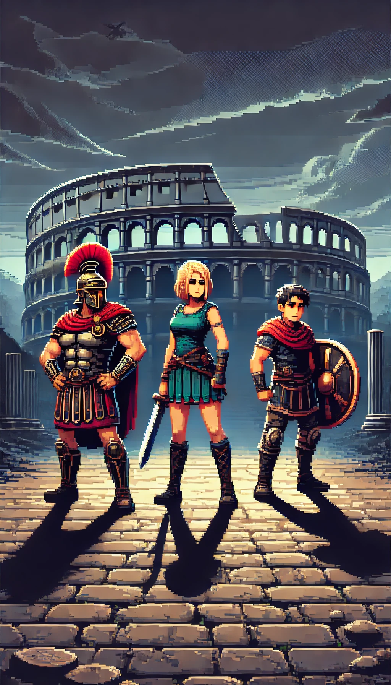
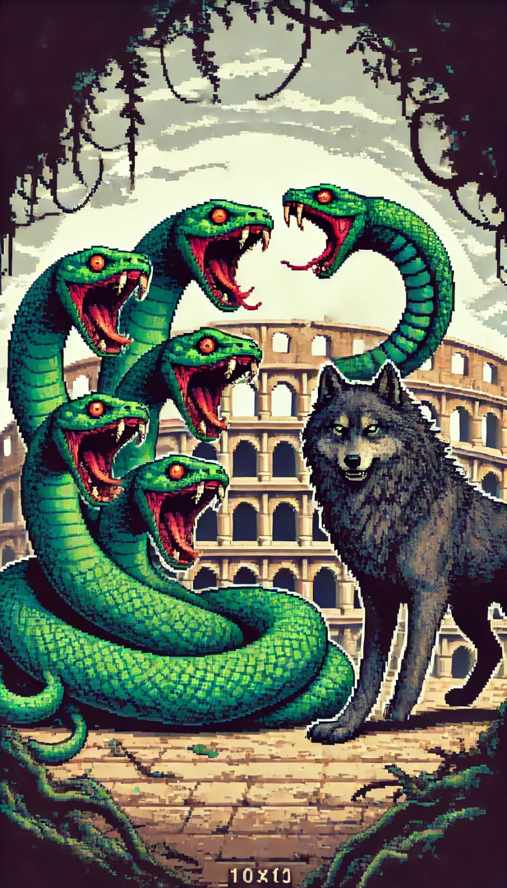
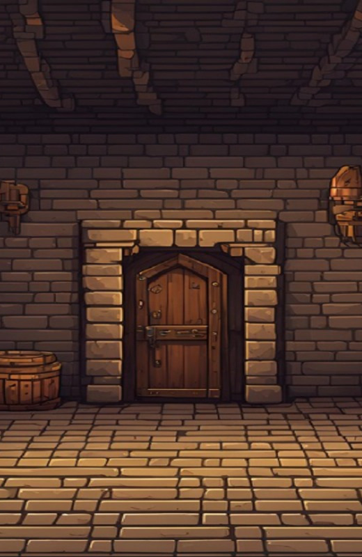
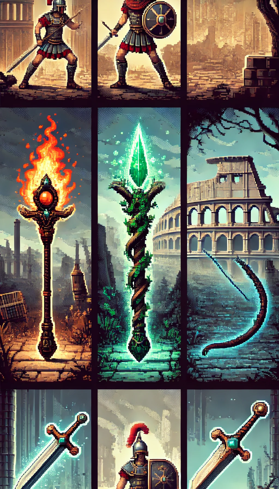
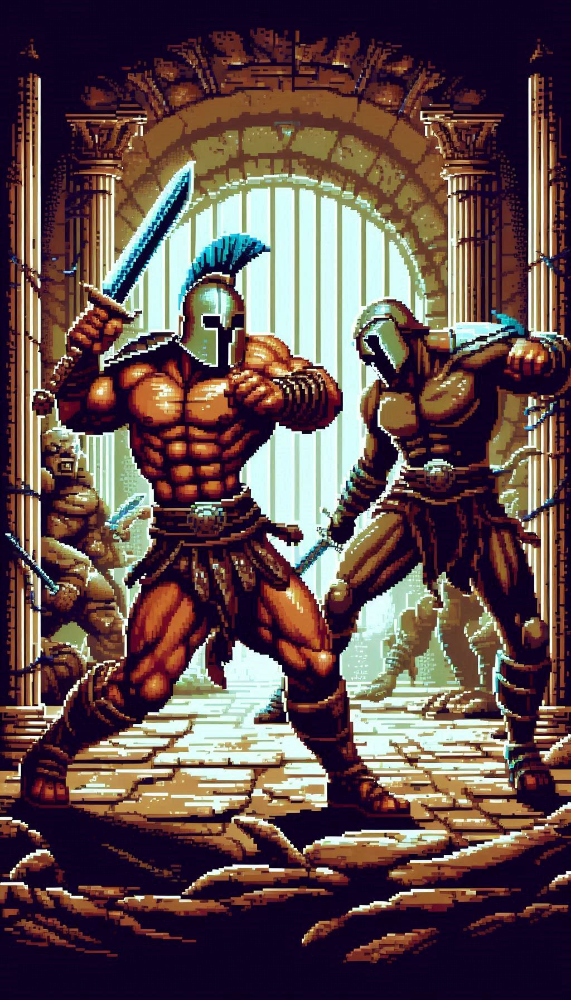

Divine Spark
como tudo aconteceu...
Na era dourada dos deuses, a harmonia entre o Olimpo e o mundo mortal foi quebrada quando os deuses, em sua arrogância, decidiram que os humanos haviam se tornado poderosos demais e ameaçavam seu domínio. Para garantir que jamais fossem desafiados, Zeus, o rei dos deuses, lançou uma maldição sobre a Terra, roubando a centelha divina que permitia aos humanos prosperar e se defenderem contra o poder dos deuses. Os deuses se tornaram tiranos, governando com mãos de ferro e exigindo adoração absoluta em troca de piedade mínima.
PERSONAGENS
Jogador Principal
Existem três opções de protagonista. E o protagonista é você que foi o último descendente de um antigo clã que foi agraciado pelos deuses com a centelha divina, uma faísca do poder que lhes dava força e sabedoria para proteger os mortais. Com a maldição lançada por Zeus, a centelha foi extinta na maioria dos humanos, mas o protagonista ainda carrega uma pequena fração desse poder em seu sangue.
Montros
Cada deus governa sobre um aspecto do mundo humano — guerra, conhecimento, amor, morte, etc. — e cada um possui um fragmento da centelha divina. Os montros têm seus templos e domínios, cada um protegido por legiões de criaturas mitológicas e armadilhas divinas.
Desafios
Salas do Coliseu
Você passará por todo o Coliseu e suas misteriosas salas, preparado para lutas e descobertas. Lembre-se, nunca se sabe o que pode vir na próxima sala
Armas
Você estará armado com armas forjadas no próprio fogo dos deuses e habilidades divinas que se manifestam ao longo de sua jornada
Lutas
Ao derrotar cada deus, o protagonista não só ganha poder, mas também se aproxima da sua verdadeira missão: libertar a humanidade do jugo divino e restaurar a ordem natural.